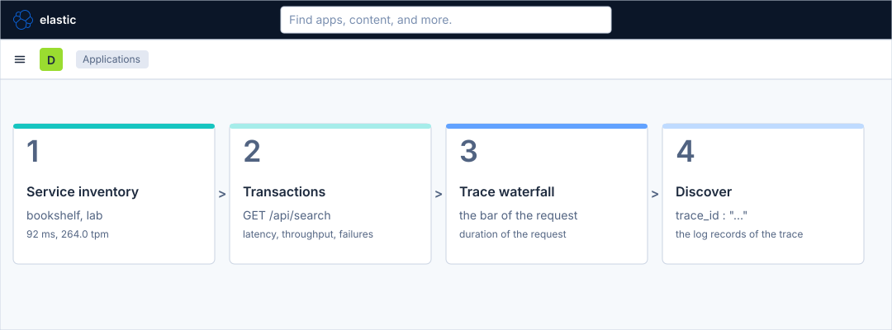
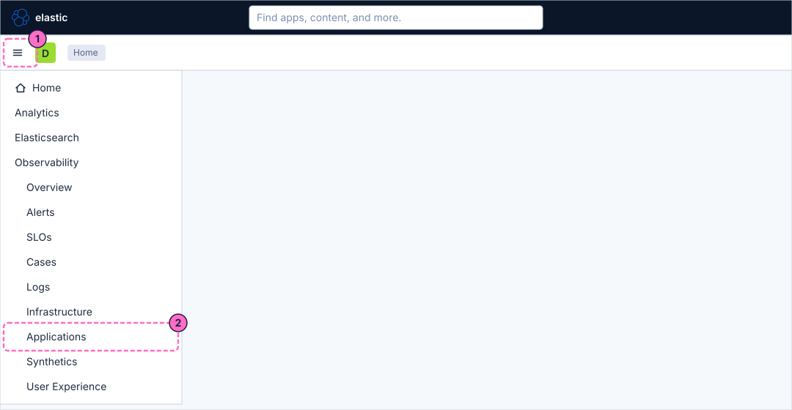
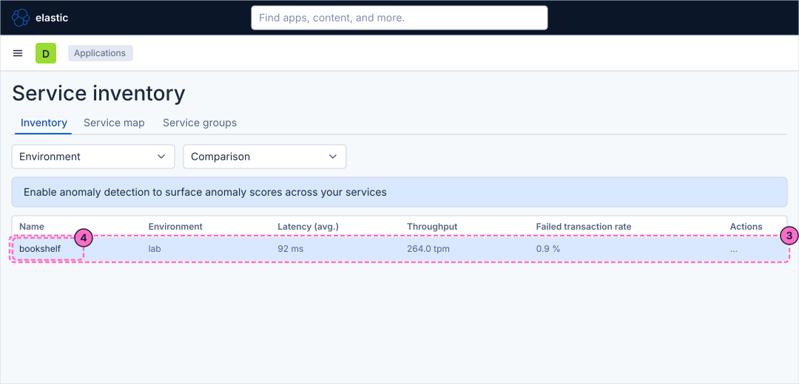
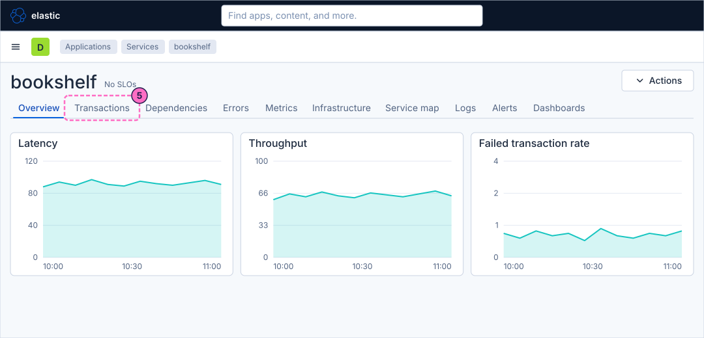
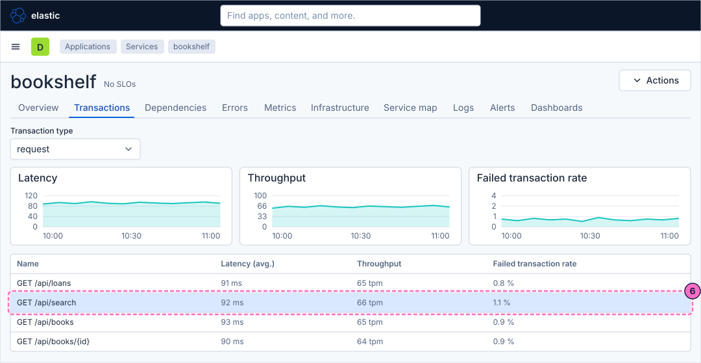
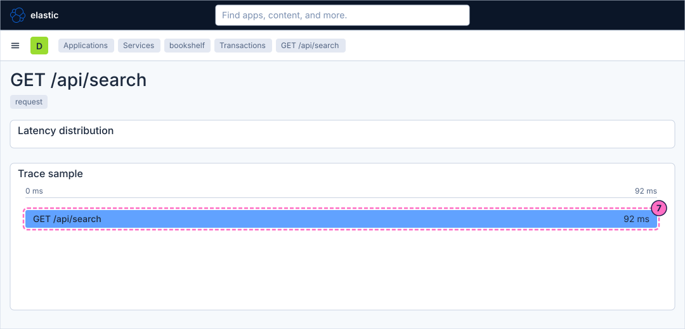
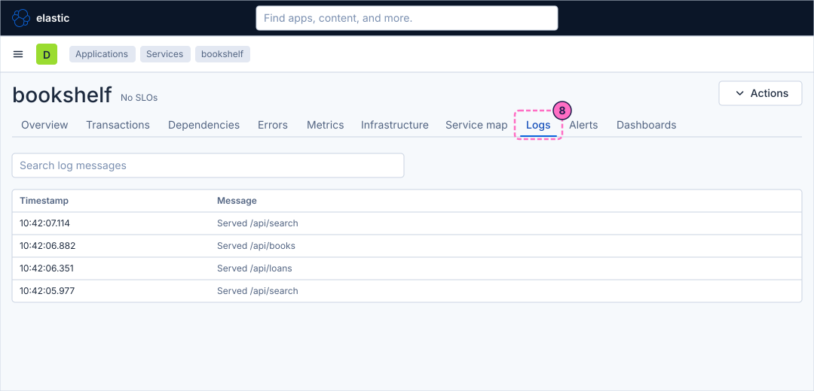
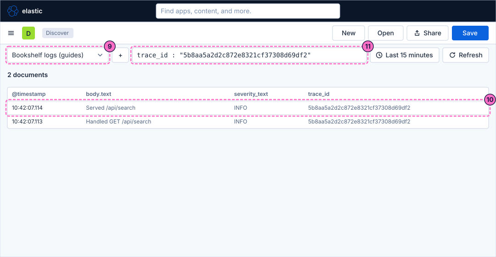
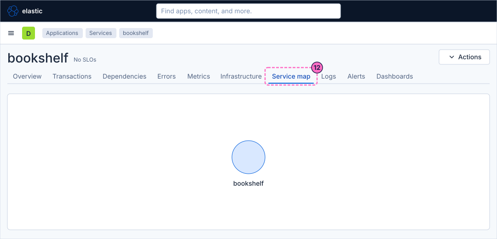
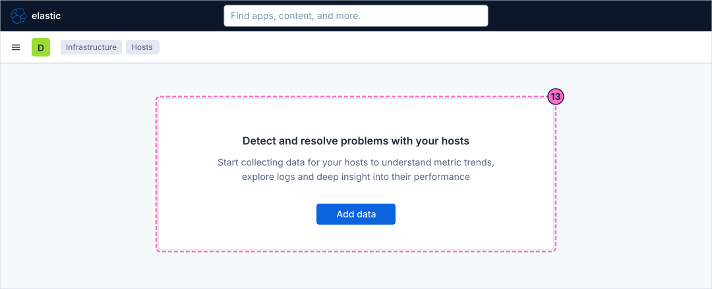

Kibana Guide: Tour of the Observability Apps
|
This content was generated with the assistance of AI and should be verified against the official documentation before being relied on in production. |
Checked on 2026-11-11 against Kibana 9.5.x.
What you build
You walk through the Observability apps with the data of the lab: the Service inventory of APM, the page of the bookshelf service, one of its transactions with the waterfall of a sample trace, and the log records of that trace in Discover.
Nothing is created; the result is a route you can repeat for any service: inventory, service, transaction, trace, logs. The guide ends with the Hosts page, which stays empty in the lab, and says why.

Before you start
-
Start the Kibana profile of the hands-on lab and wait about a minute:
cd lab docker compose --profile kibana up -d -
Open http://localhost:5601 and sign in as
elasticwith the passwordlab-elastic-password. When Kibana opens its full-screen welcome page, click Explore on my own. -
Do the previous guide, Anomaly detection and AIOps. The guide that creates the data view, Upload a file and create a data view, is needed too: the last steps use the data view Bookshelf logs (guides).
-
Wait about two minutes after the start, with the load generator in its default mode, so that APM has transactions to show.
-
The lab sends logs and traces to Elasticsearch, and APM builds its views from the traces. It sends no system metrics, so Infrastructure and Hosts have no data; the last step shows the empty page and does not try to fill it.
-
APM and the Observability pages need no licence beyond the basic one; the lab runs a trial licence anyway.
-
The guide was checked on Elasticsearch and Kibana 9.5.6. The figures are drawings of the Kibana 9.5 user interface, not screenshots, so small details can differ from your screen. The trace waterfall, the Logs tab, the Service map and the Discover document list are drawn generically; look for a control by its name when it is not where a figure shows it. A highlighted box with a number marks the control of the step with the same number.
Steps
The guide works in three apps of the primary navigation: Applications (APM), Discover and Infrastructure. The numbers you see, such as 92 ms, 264.0 tpm and 0.9 %, change with the load; the structure of the pages does not. Kibana 9.5 still shows a banner on the Observability pages that offers the Observability navigation; ignore it, this guide uses the classic navigation of the default space.
Open the service inventory
-
Click the menu button (Toggle primary navigation) at the left of the second bar.
-
Under Observability, click Applications. If the entry opens a submenu, click Service inventory in it.

-
On the tab Inventory, find the row
bookshelfin the environmentlab. The columns are Name, Environment, Latency (avg.), Throughput, Failed transaction rate and Actions. The tabs Service map and Service groups sit next to Inventory; the filters Environment and Comparison narrow the table and compare it with the day or week before. -
Click bookshelf in the Name column.

Follow one transaction
-
The service page opens with the header bookshelf and the tabs Overview, Transactions, Dependencies, Errors, Metrics, Infrastructure, Service map, Logs, Alerts and Dashboards. Click the tab Transactions.

-
Check that Transaction type is
request, then clickGET /api/searchin the table of transactions. The table listsGET /api/loans,GET /api/search,GET /api/booksandGET /api/books/{id}, each with Latency (avg.), Throughput, Failed transaction rate and Impact.
-
On the page of the transaction, scroll to the waterfall of the trace sample. Each bar is a span of the request; its width is its duration on the time axis. A request that the service handled by itself shows as one bar.

From the trace to its logs
-
Go back to the service page (use the breadcrumb bookshelf) and click the tab Logs. The tab lists the log records of the service, such as
Served /api/search.
-
To follow one request through all its records, open Discover from the primary navigation (Analytics → Discover) and check that the data view is Bookshelf logs (guides).
-
Expand one record of the document table and copy the value of the field
trace_id. -
In the query bar, type
trace_id : "PASTE-THE-ID", with the copied value in place ofPASTE-THE-ID, and click Refresh. Every record of that request, from the same trace, remains.
Look at the other views
-
Go back to the service page and click the tab Service map. The map draws the service and, when the traces show them, the services and databases it calls.

-
Open Infrastructure from the primary navigation and choose Hosts. The page shows the message "Detect and resolve problems with your hosts" and the button Add data, and nothing else. The lab collects no host or system metrics, so Hosts and the Infrastructure inventory have nothing to draw; with a collector that sends them, this page lists hosts with their CPU, memory and disk. Do not click Add data in the lab.

Check the result
You went from the Service inventory to the transactions of bookshelf, to the waterfall of one trace, and to the log records of the same trace in Discover. To see the failures show up in the same pages, force errors and reload the Transactions tab with a time range of Last 15 minutes:
curl -X POST localhost:8090/mode/failingWithin about two minutes the Failed transaction rate of the transactions rises well above 1 %, and the failed requests have log records with severity_text ERROR in Discover. Restore normal traffic afterwards:
curl -X POST localhost:8090/mode/normalVariations
-
In the Service inventory, turn on the anomaly detection that the banner offers once you have done the previous guide; it adds an anomaly score to each service.
-
Open the other transactions of the table the same way and compare their waterfalls and latency.
What can go wrong
| Symptom | Cause | Fix |
|---|---|---|
The Service inventory is empty |
The lab started a moment ago, or the load generator is stopped, so APM has no transactions in the time range. |
Wait two minutes, widen the time picker to Last 1 hour, check the mode with |
The page of a transaction shows no trace sample |
The time range holds no sample of that transaction. |
Widen the time range and press Refresh. |
The query |
The data view is not Bookshelf logs (guides), the id was copied with extra characters, or the time range does not cover the record. |
Check the data view, paste the id between the quotes only, and widen the time range. |
Hosts shows only Add data |
The lab sends no host metrics. |
This is expected here; the page fills once a collector sends system metrics, as the reference page on infrastructure monitoring explains. |
Clean up
The guide creates nothing; there is nothing to remove. If you changed the load generator, restore it with curl -X POST localhost:8090/mode/normal.
Where to go next
-
Previous guide: Anomaly detection and AIOps.
-
Next guide: Spaces, roles and users, which creates a space, a role and a user.
-
Reference: APM and Synthetics covers services, transactions, traces and correlation in full, and Infrastructure and host monitoring covers the Hosts and Infrastructure inventory pages and the data they need.